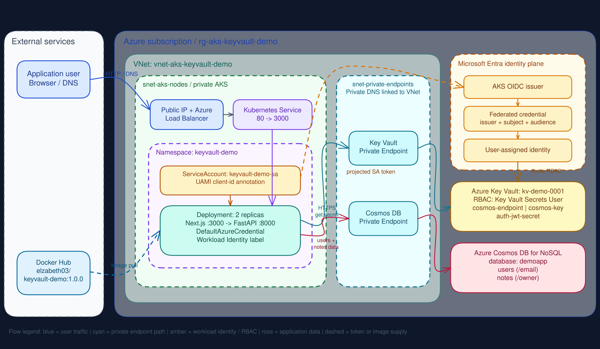

Sentinel Security Presentation
Azure Key Vault As The Trust Center
Sentinel uses Key Vault to keep runtime secrets out of source code, out of Kubernetes manifests, and away from human copy-paste operations.
AKS Workload Identity
Managed Identity
Private Key Vault
RBAC
Blob login evidence
Speaker notes
Open by positioning Key Vault as a control point, not just a password box.
For Sentinel, Key Vault protects the values that make authentication and data access possible: database URL, app client secret, signing key, encryption key, and internal service token.
The important sentence is: the application proves its identity to Azure, then Azure decides whether that workload may read a secret.
The security problem
Without Key Vault, secrets leak into every operational layer
A secret copied into code, a manifest, a terminal history, or a chat message
becomes an operational liability.
Speaker notes
This is the business reason for Key Vault. It reduces blast radius and gives a controlled place for secret lifecycle management.
Make the distinction clear: environment variables still exist at runtime, but values are sourced through Key Vault and Kubernetes secret sync, not checked into the repo.
In the minimal setup, the risk is smaller than a full production platform, but the habit matters because the same pattern scales.
Current minimal deployment
Key Vault sits beside the app, but controls what the app can know

Speaker notes
Walk left to right: user logs in, Entra ID returns tokens, gateway routes callback to identity service, identity service stores user and tenant state in PostgreSQL.
Key Vault is not in the direct browser path. It serves the workload at startup and runtime.
Blob Storage is now visible in the demo: after successful login, the identity service writes a small JSON login receipt.
What Key Vault protects
Only sensitive runtime values belong in the vault
ConfigMaps contain names and URLs. Key Vault contains secret values.
Speaker notes
Use the Azure Portal to show Key Vault secrets by name only. Do not click "Show Secret Value" during the presentation.
Explain the difference between non-sensitive configuration and secrets. A hostname or secret name can live in a ConfigMap. A password, client secret, signing key, encryption key, or token must not.
Also mention soft delete and purge protection as vault safety features, especially for accidental deletion.
Passwordless Azure access
The pod reaches Key Vault without storing an Azure credential
1
Kubernetes ServiceAccountIdentity Service pod runs as a named service account.
2
Projected OIDC tokenAKS gives the pod a short-lived federated token.
3
Entra token exchangeFederated credential validates issuer, subject, and audience.
4
User-assigned managed identityAzure returns an access token for the UAMI.
5
Key Vault RBACVault allows only approved secret reads.
The application authenticates as a workload, not as a copied client secret.
ServiceAccount annotation:
azure.workload.identity/client-id = UAMI client ID
Pod label:
azure.workload.identity/use = true
SDK:
DefaultAzureCredential()
Speaker notes
This is the most important technical slide. Slow down here.
The service account is the Kubernetes identity. The user-assigned managed identity is the Azure identity. The federated credential connects the two.
If the namespace, service account name, issuer, or audience is wrong, Key Vault access fails before the app starts.
Runtime flow
Login proves the full chain: OAuth, secrets, database, and blob evidence
1. User signs in
Microsoft validates the user and returns the authorization code.
2. Identity commits state
Sentinel resolves tenant/user, encrypts refresh token, and writes PostgreSQL records.
3. Blob receipt appears
A JSON receipt is written to the Storage Account as visible proof of success.
Speaker notes
Explain the blob addition clearly: it exists to make the Storage Account meaningful in the minimal demo and to visibly prove that login completed.
The blob does not store tokens, secrets, or emails. It stores IDs, event type, timestamp, account type, and correlation ID.
The login blob write is intentionally non-blocking. If Blob Storage is temporarily unavailable, the user should still be able to log in.
Security controls
Key Vault works because identity, RBAC, network, and operations line up
- Managed identity receives least-privilege Key Vault access.
- Private endpoint keeps the vault off the open public path.
- Secrets Store CSI syncs selected values into runtime-only Kubernetes secrets.
- Session keys and encryption keys are rotated from Key Vault, not source code.
- Storage Blob Data Contributor is scoped to the managed identity.
Speaker notes
This slide helps you answer troubleshooting questions.
For Key Vault failures, debug in this order: pod label, service account annotation, federated credential, UAMI, RBAC role, private endpoint/DNS, secret name, secret enabled state.
For Blob Storage, the equivalent check is Storage Blob Data Contributor on the UAMI and network access from AKS.
How to present it
Demo path: show control, then prove behavior
1
Key VaultShow secrets by name, versions, RBAC, private networking.
2
Managed identityShow role assignments for Key Vault and Blob Storage.
3
AKSShow service account, pod label, and running pods.
4
LoginUse a fresh browser session and complete Microsoft login.
5
EvidenceOpen Blob container and show the new login receipt.
kubectl get pods -n sentinel-app
kubectl logs deployment/identity-service -n sentinel-app --tail=100
Expected log:
login_blob_written
Portal:
Storage Account > Containers
sentinel-login-events > login-events
Closing line: Sentinel does not just hide secrets. It proves which workload can use them, through which path, and for what purpose.
Speaker notes
Keep the live demo simple. Start with the vault, then identity, then AKS, then login, then blob evidence.
If login fails during the live demo, use logs and explain that this architecture is designed to fail closed when identity, RBAC, or network rules are wrong.
End by tying Key Vault to the broader Sentinel platform: the same pattern will protect future microservice secrets, operation tokens, webhook secrets, and AI integration keys later.